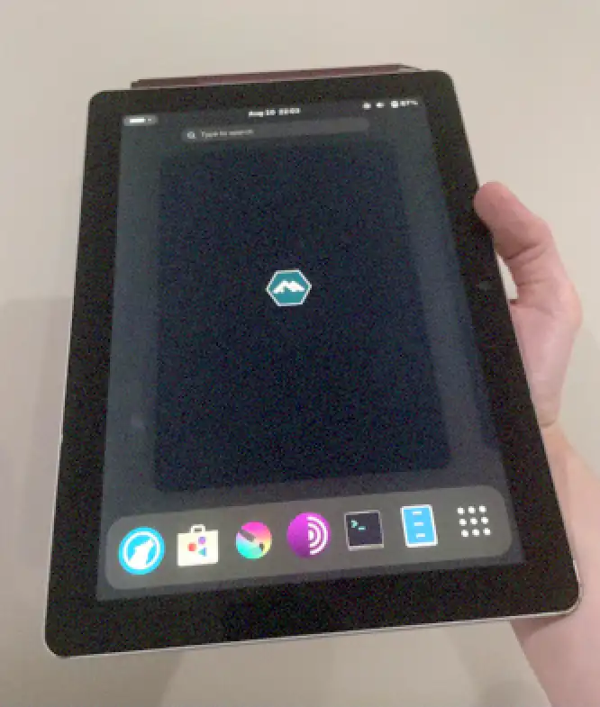

This weekend a friend of mine gave me her old Microsoft Surface Go (1) laptop/tablet combo.
The device runs Microsoft Windows by default but given that the last reasonable version of Windows (10) is nearing its End of Life, and that it is not my OS of choice, i decided to put Linux on it instead.
Thanks to the long-term effort of the linux-surface project, the Surface line of laptop/tablet is pretty well supported on upstream Linux.
Per the project's recommendation, i first tried to install upstream Ubuntu.
I dd(1)'d the 5GB ISO on a USB drive and plugged it in the tablet via a USB-C dongle.
Than i changed the boot order in the UEFI menu. Accessing UEFI is done by holding the Volume-Up button while the machine is booting up.
The installation was absolutely painless and a handful of minutes later the machine rebooted on the newly installed OS.
By default the touchscreen works but the interface is a bit too small for touching with your fingers, so you just need to increase scaling to 200% under the Display section in the GNOME settings.
This works well, however some windows don't fit in that format. Most GNOME default apps do however.
Performances were ok but some animations would feel slow. Watching YouTube videos works fine but can get choppy in 1080p mode so i had to switch to 720p.
Overall this was quite successful but i felt like i wanted to try to see if something else was better and to use a distribution that suits me better.
Enter Alpine Linux; a distribution i enjoy using for its simplicity, vibrant package repository, ease of contributing and 6 months release cycle.
Installing it was fairly easy with the detachable keyboard and installing a Desktop Environment was as simple as
setup-desktop gnome
once rebooted on the system.
Wifi, touchscreen, etc all work out-of-the box. However in GNOME i noticed a difference with Ubuntu in that turning the tablet wouldn't rotate the screen.
Looking online it looked like all i needed was to install iio-sensor-proxy but it was already there, however of course it wasn't enabled in the init system but after a
rc-update add iio-sensor-proxy
it worked perfectly, GNOME now shows a button to stop the rotation in the top-right dropdown menu, and the whole desktop experience feels a lot snappier than on Ubuntu for some reason.
On Alpine i've also tried other Desktop Environments such as KDE and Phosh.
Both were worse for my taste than GNOME.
GNOME isn't a Desktop Environment i've been using in the past 12 years at all, my heart is with tiling windows managers (sway currently and previously xmonad and awesomewm) but they aren't yet made for a touch-based input method. At present though, GNOME offers an incredible experience on this tablet form-factor. "Swipe-up to show the onscreen keyboard" is really thoughtful for applications that require key bindings or when an input field isn't recognized and doesn't show the onscreen keyboard automatically.
Having the option to use the pen is also incredibly useful, for applications that don't handle "long press as right click", need precise input, mouse hover, and for Krita (drawing application) where GNOME shines by enabling support for the pen side-click to open the brush menu and the top-button which doubles as eraser.
The only thing really broken i've seen so far is with Tor Browser which doesn't understand scrolling at all and freezes the whole desktop with pretty much any gestures requiring to click on the power button (suspend) to fix it. However the Tor network is still available when the application is launched, via another browser's SOCKS proxy settings on 127.0.0.1 port 9150.
Don't be afraid by the "low-end" CPU, it's honestly plenty fast for a typical usage for a tablet.
If you want to get a tablet, grab one, save it from landfill and have fun!
Happy hacking!